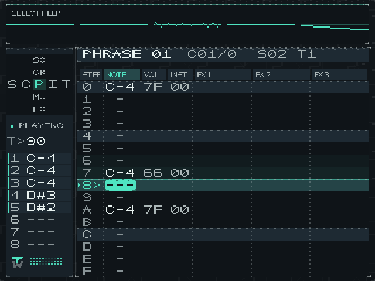
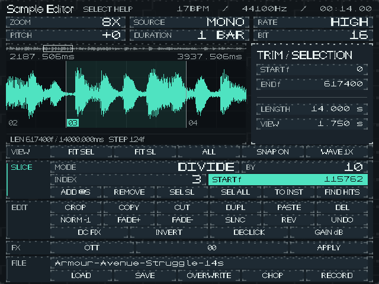

A demo party
in your pocket.
TrackWerk 1.2.0 is a free, open-source eight-track handheld music studio by Kid Bunka. Forty complete visual Scenes meet sample editing, archive discovery, rhythm generation, synthesis and momentary performance effects.
What changed
- 40 visual Scenes across 10 families, including Daylight and Hardware.
- 54 palettes, optional typefaces, cursor glide, soft scrolling and animated controls; Motion can be disabled.
- SID Chip, DCO Poly and FM SysEx voice-bank workspaces within a 123-model synth collection.
- Archive source selection, sample editing, slices, CHOP review and internal resampling.
- Drumlab, Harmony with 48 progression templates, FX, mastering and 64 Punch positions.
- A full illustrated English handbook and a two-minute 1.2 update film with native audio.
New in 1.2: a twelve-tab sound browser, favourites and recent sounds, interactive First Beat tutorial, clearer Sources and progressive MP3 preview. Illustrated update guide →
Short description
Write a phrase, dig for a recording, chop a motif and perform the transition. TrackWerk brings an eight-track music workflow to Android and selected Linux handhelds, with a visual personality that can go from terminal green to daylight paper.
Watch the update
YouTube update film → · YouTube Short → · Instagram Reel →
Assets
Use the actual interface gallery, walkthrough poster and film on this website when covering TrackWerk. Credit “TrackWerk / Kid Bunka”. Device frames are illustrations. Soundtrack sample-library material has composition-use terms; it is not a raw sample collection for redistribution.




Walkthrough poster · English handbook · Project and source

Credit
TrackWerk by Kid Bunka. Built on PocketTracker by conanizer and contributors. GPL-3.0-or-later. See full credits and production notes.